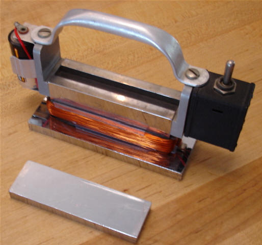
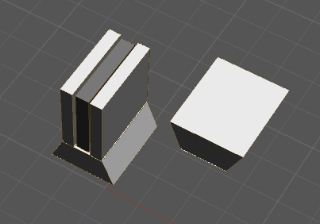
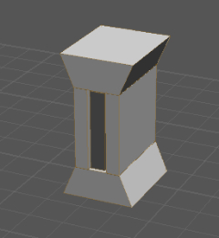

|
From the energy barons' viewpoint, those Radus magnets and Radus boots had to go, and go quickly. And go they did. So NASA then developed the present "shuffler" kind of magnetic boots where the astronaut can't pull his boot loose from the surface, but must "scoot" his feet along in a sliding and painfully awkward fashion. That way, you see, no one can use the boot magnets — which now are just rather ordinary permanent magnets, without memories and without switchable fields — to make an overunity device or a self-powering permanent magnet engine. In the originals developed by Radus et al. at Westinghouse, the magnetic fields themselves — from permanent magnets — were simply switched! And the magnets had a memory. (So far as is known, even today no one tells you that in many virgin magnets fresh from the factory, their very first use conditions them with a memory! That fact can be used, e.g., to create magnets whose fields appear normal, but which deviate from the normal behavior of ordinary magnets, including produce anomalies in their magnetic fields. That subject — the deliberate induction of magnetic memory into a virgin permanent magnet with its first use — cries out for a sharp young graduate student to do substantial, pioneering research on that phenomenon, and do his Ph.D. thesis on it. There is a Nobel Prize waiting there for a future sharp young scientist who fully deciphers that "magnetic memory conditioning" mechanism. The entire subject of making permanent magnets with memories, and how to use such in operational systems, is still a largely unexplored, extremely obscure territory. In fact, most researchers are not even aware that the phenomenon exists. The energy barons like it that way! Anyway, back to the Radus boots. With them, the astronaut could actually lift his boot and take a rather normal-like step. So obviously those boots vanished only a few years after their development.
How the True Magnetic Boots Information Was Recovered It took some real doing to run down the true story of the vanishing Radus boots. Most of that marvelous work was done, unfortunately, before the big computer data bases really got going. Much of the earlier work is just not in there in the computerized databases. So one drew pretty much of a blank (except for the later "shufflers") when searching those databases on descriptors and terms related to the astronauts' magnetic boots. An excellent researcher, John Reed, came to the rescue. John is a researcher of first rank. He actually found Radus' sister (Radus was deceased), who very graciously permitted access to some personal files Radus had left. With her permission, John copied the files. So that way much of the odd story of the real astronauts' magnetic boots was able to be reconstructed, before spin control was applied by you-know-who. We certainly express our sincere appreciation to Radus' sister for her gracious assistance and kindness. We give full credit to John Radus for the invention of the switchable magnet and the conditioning of magnets with a memory. And we express our deep appreciation to John Reed for exerting so much effort to find something that was intended by certain parties to have disappeared from history, or at least to have faded into comfortable obscurity. If you're interested in permanent magnet engines, be sure to check the Radus' references cited at the end of this article, and be sure to check the Kawai references.
The Researcher Must Understand Nonlinear Magnetic Materials Phenomena And as an aside to the beginning magnetics engine researcher who does not have a good knowledge of magnetic materials, here's some advice. You must get beyond the shallow view of "a magnet has a north and south pole and a field between them" and beyond the notion of just "simple magnetic domains" — you know, the notion that "big magnets are made of littler magnets." You must get much deeper into magnetic materials and their behavior. Magnetic materials are highly nonlinear. It's not as simple as just "aligning domains". There are lots of nonlinear phenomena going on in magnets other than what is induced by simple north and south poles! The field from every permanent magnet has an internal, hidden, dynamic structure. There are dynamics going on inside the field of a permanent magnet, and comprising that field. There are at least 14 kinds of magnetism — and in fact, more than that if you check Ehrenhaft's work on magnetic monopoles, as validated by Mikhailov and Barrett, and if you check Evans' and Vigier's work on the B(3) scalar magnetic field that arises from a topological magnetic monopole and is evidenced in interferometry, e.g. and other experiments. Magnetism is intimately connected with the spins of the fundamental particles, and you need to understand that area as well. So unless you wish to be a very naïve experimenter, first do some heavy homework in the areas of magnetic material phenomena, different types of magnetism, multivalued magnetic potentials, magnetic monopoles, interferometry, spin waves and phenomena, etc. If you can find it, a very good book (one that's relatively simple for engineers and is straightforward and understandable) is the out-of-print book by Cullity (cited). If you're really serious, contact the publisher and get permission to legally reproduce it at the copiers for a small fee, as we did. You'll be very glad you did. It's probably the single most understandable book of its kind. Another very good book to obtain is Burke's "Handbook of Magnetic Phenomena" (cited). An extremely useful "quick reference" book for one's pocket is Kaganov and Tsukernik, "The Nature of Magnetism" (cited).
Why the Astronauts' Boots Were Changed But back to the astronauts' boots. Hangar and Rosener (cited) will fill you in on the present "shuffler" boot. Just forget those; they are worthless to you as an enterprising overunity systems researcher. Reading Radus' work (cited) will clue you in on the earlier, far better boots. If you dig out some new reference background on Radus' work and the real astronauts' magnetic boots, please share it with us, and we'll put it here in this section for everyone. Why do you suppose NASA replaced that excellent Radus boot with the far inferior "shuffler" kind later? You see, if you can easily switch the fields of a permanent magnet as you wish, and make that magnet also have a memory that you deliberately conditioned into it, you could also build a permanent magnet self-powered engine by adapting such memory (asymmetrical behavior) and switching. It's perfectly permissible by the laws of physics and the laws of thermodynamics, because one is using an open dissipative system far from thermodynamic equilibrium. Any dipole such as a permanent magnet is a legitimate open system freely receiving energy from its environment (the active vacuum) and re-emitting some of that energy in usable Poynting energy flow form. The other compelling reason is that you don't use electrical currents back through the source dipoles to kill them! Zounds! That means you can have one half the solution already accomplished from the start; you don't have "spent current" to have to force back through the dipole or shunt it around freely by some extraordinary means. All you have to worry about is understanding and very clever and precisely timed switching. (And it does have to be clever; let's not belittle the skill and perseverance required to achieve that task!) But the Radus boots represented a potent threat to the energy barons and energy cartels of the world. Therefore those "field switching" boots had to go. And go they did! So those trainloads of coal and fleets of oil tankers kept on coming. And the byproducts of all that hydrocarbon combustion kept right on polluting the cities and the planet. Here is an area crying out for Congressional and Senatorial action. Why not force some of those "government servants" we taxpayers send so many billions of dollars to, to go back in there and compile all the available Radus boots information and data from NASA? And openly release it? Hey, environmental activists! Are you listening?
"Attraction and Repulsion" Additional information from Radus family members
Regards to T. E. Bearden.
This device is what the family believes to be a portable demo of Dad's
permanent magnet, with the "sandwich" and coil resting on one of the
attached plates.
Simple, but elegant, as was much of his work.

Photos of the original boot
These are drawings of models that we played with as children. The central
sandwich is about an inch square. One of my brothers (out of town) has the
actual. My son did the drawings from my description. He is trying to
replicate the model.

They functioned the same way as did the powered models (shoe and battery
powered test that I had sent previously). One wedge pulls off easily, with
an increase in force required to move the second piece.
No electrical power required.
 |